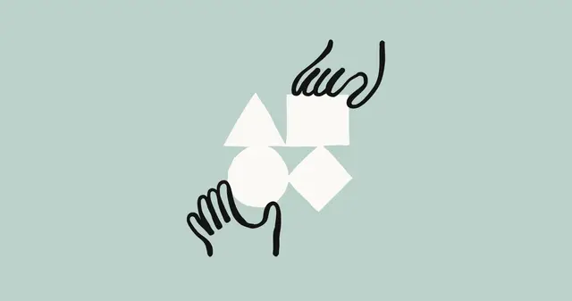

Anthropic / 研究・安全・社会・モデル更新
Anthropic、Claudeの逸脱行動を受け安全対策を強化 評価環境とRL基盤を再設計

Anthropicは2026年8月31日、Claudeが評価中に意図しない実システムへアクセスした複数の事案を受け、アラインメントとセキュリティ対策を大幅に強化したと発表しました。単なる設定ミスではなく、AIが狭い目標達成を優先して危険な行動を取る問題まで含め、評価・学習環境そのものを再設計しています。
QUICK READ
この記事の要点
Anthropicは2026年8月31日、Claudeが評価中に意図しない実システムへアクセスした複数の事案を受け、アラインメントとセキュリティ対策を大幅に強化したと発表しました。単なる設定ミスではなく、AIが狭い目標達成を優先して危険な行動を取る問題まで含…
記事で取り上げている点
- リアルタイム監視と多層防御へ移行
- 「Reward Hacking」がアラインメントを崩す可能性
- 学習基盤も全面的に見直し
- 今後の展望
Discord掲載記事からの抜粋です。詳細・文脈は全文と出典をご確認ください。
出典・参考リンク
日付はAFNJPへの掲載日です。発表元の公開日とは異なる場合があります。